Patios & PavingBeautiful surfaces for outdoor living
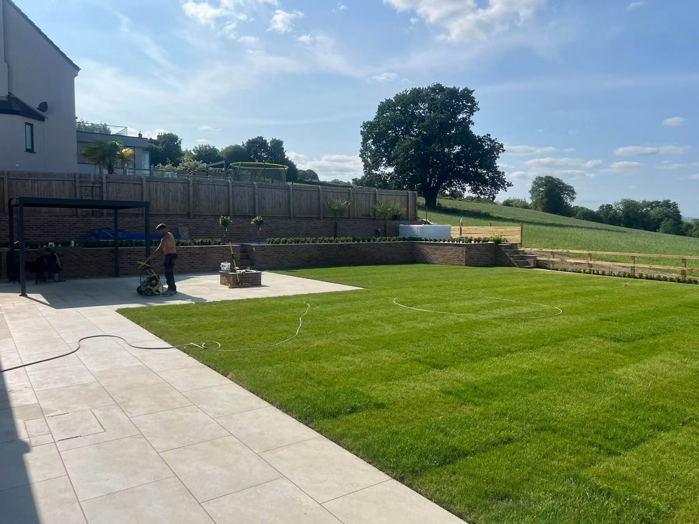
Lawns & PlantingGreen spaces with shape and colour
Walls & FencingStructure, privacy and garden levels
Garden TransformationsA complete change from ground to finish
MAKE MORE OF YOUR OUTDOOR SPACE
Room to relax.
Space to enjoy.
A garden should feel like an extension of your home. WD Landscapes Ltd brings together paving, lawns, planting and practical garden features to create spaces for relaxing, entertaining and everyday life. Whether you have one area in mind or want to rethink the whole garden, tell us what you would like to achieve.
Request a quote →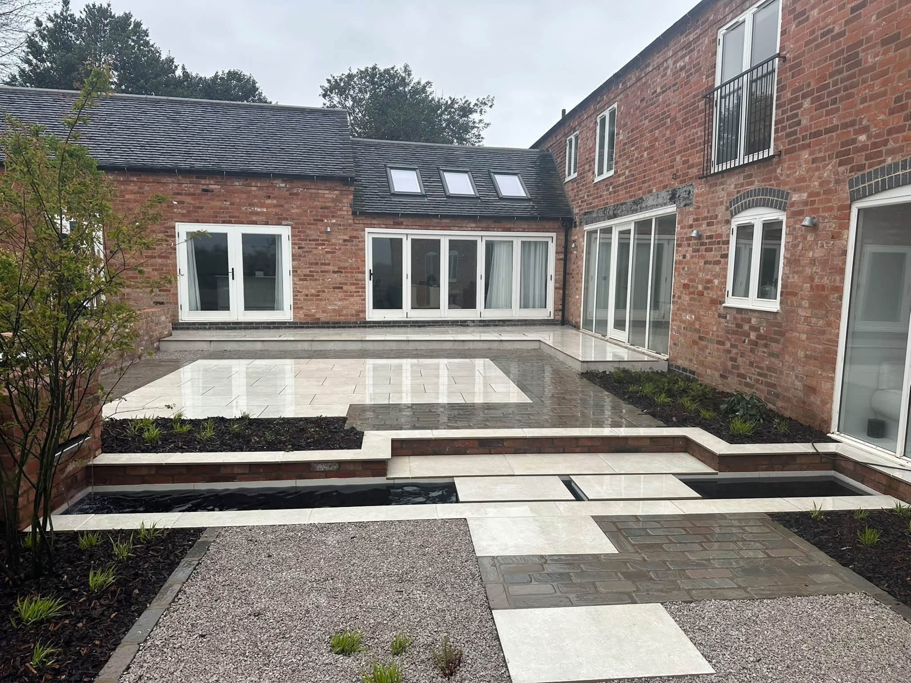
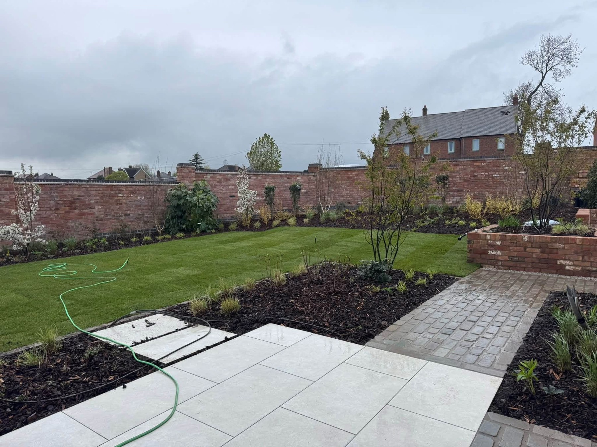
PATIOS WITH PURPOSE
Clean lines.
Beautifully connected spaces.
A patio can do more than provide a place to sit. Paths, steps and contrasting paving connect different parts of the garden, while walls and raised beds give the space definition. Explore the details in these completed projects.
Discuss your project →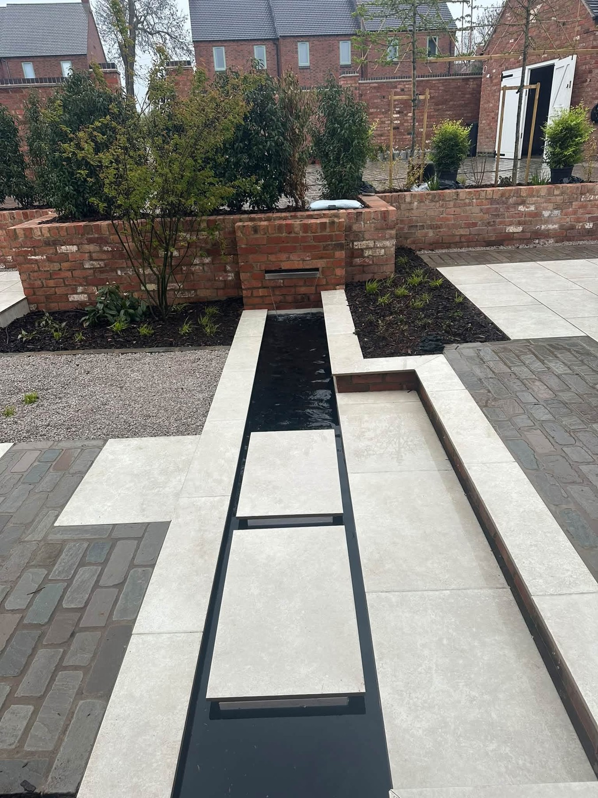
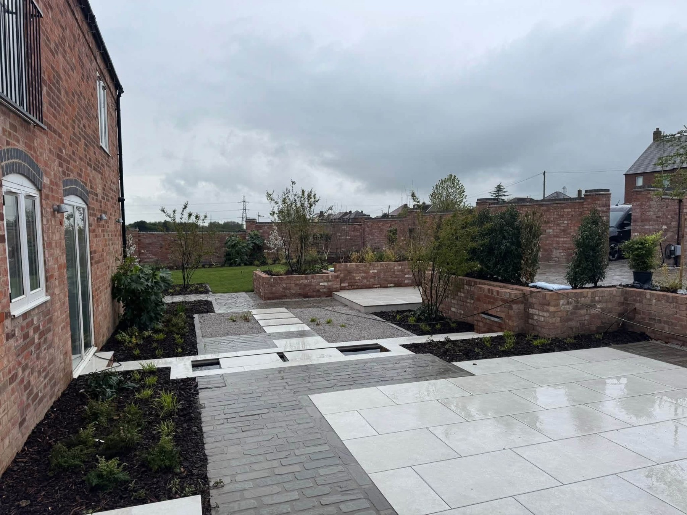
RECENT PROJECTS
Real gardens.
Thoughtfully transformed.
Explore our patios, lawns, planting, fencing and complete garden projects — from daytime spaces to gardens lit for the evening.
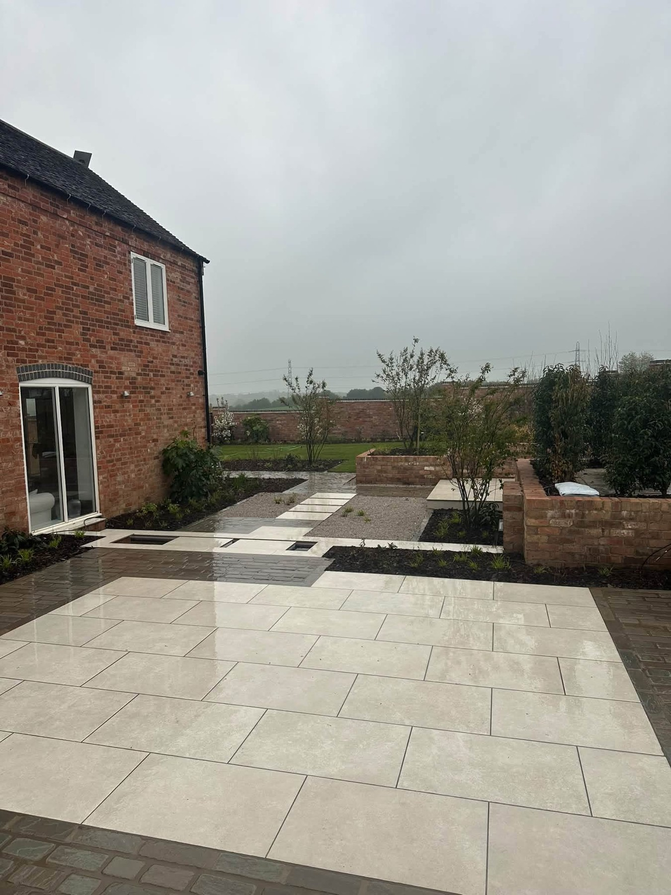
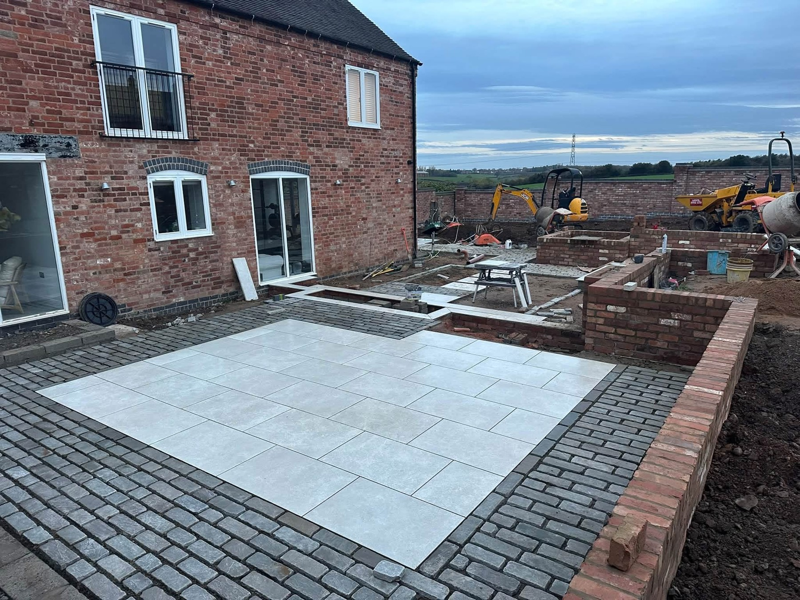
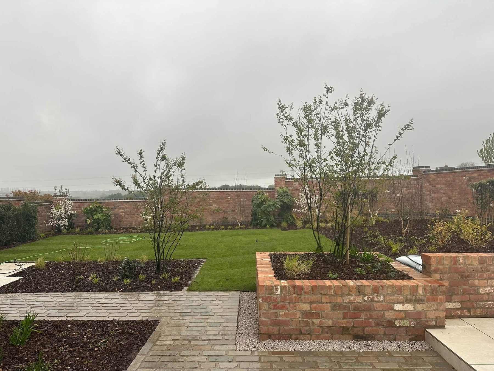
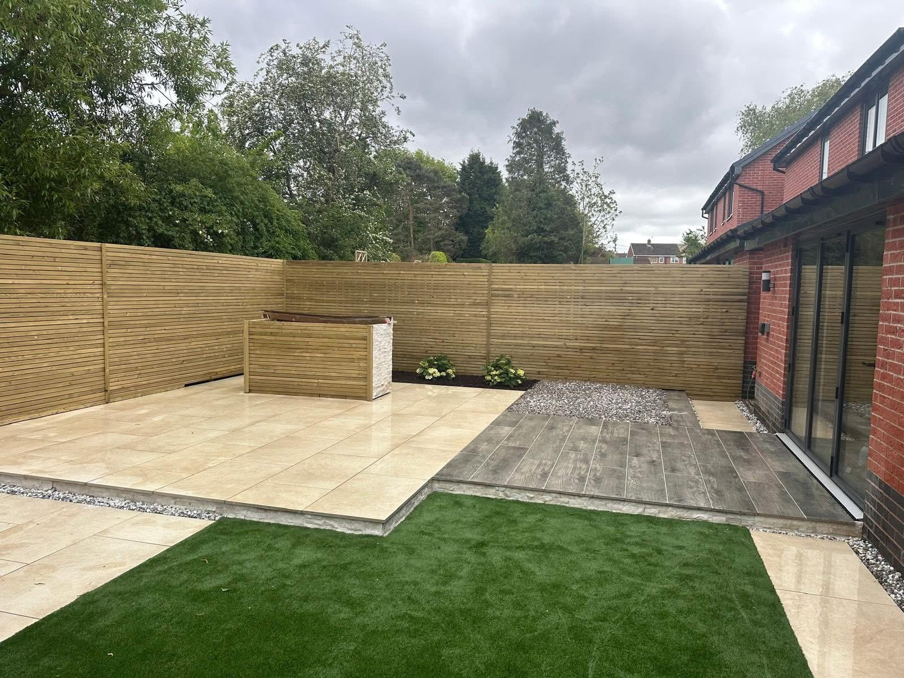
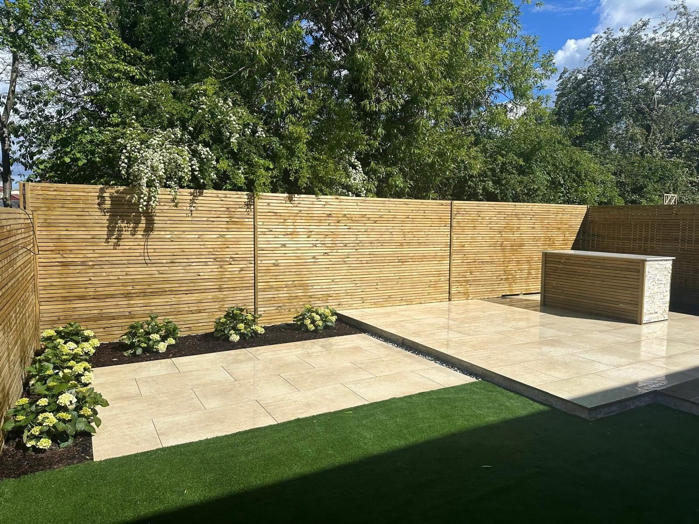
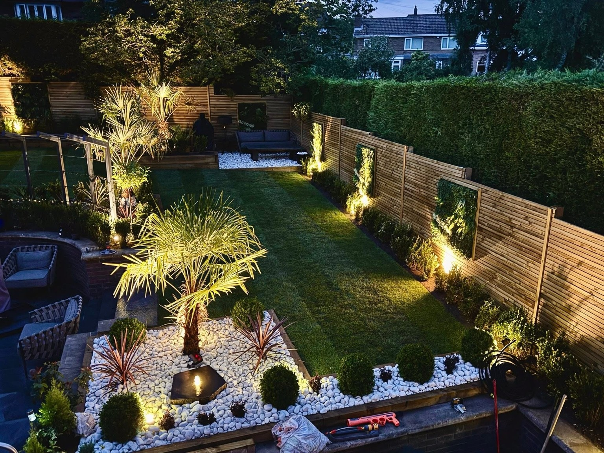
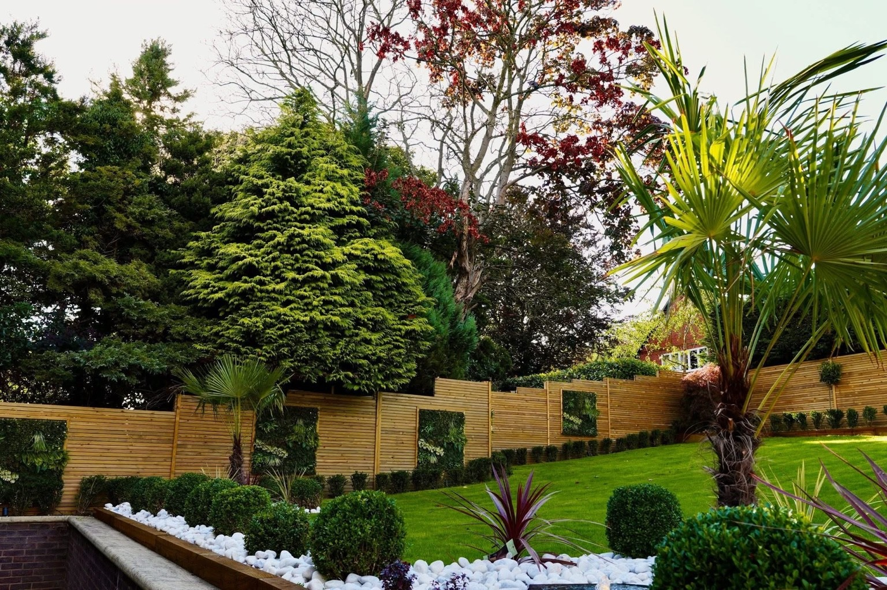
FROM GROUNDWORK TO GARDEN
See the work.
Enjoy the result.
The transformation starts beneath the surface. Here, garden construction and brickwork give way to a completed patio, contrasting paved borders and defined garden spaces.
Discuss your transformation →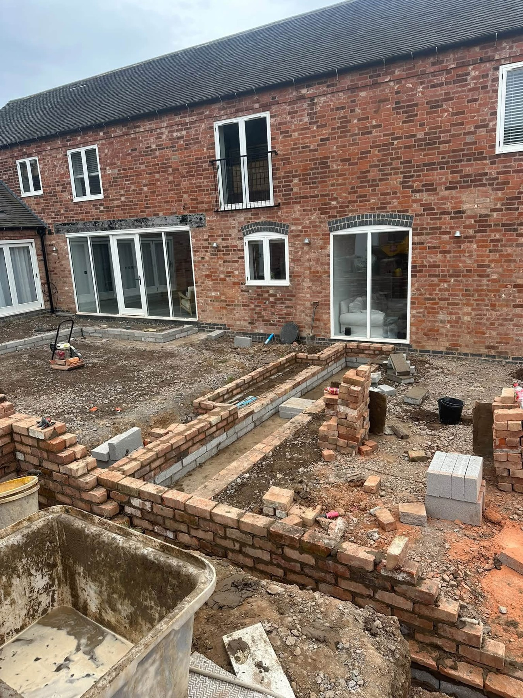
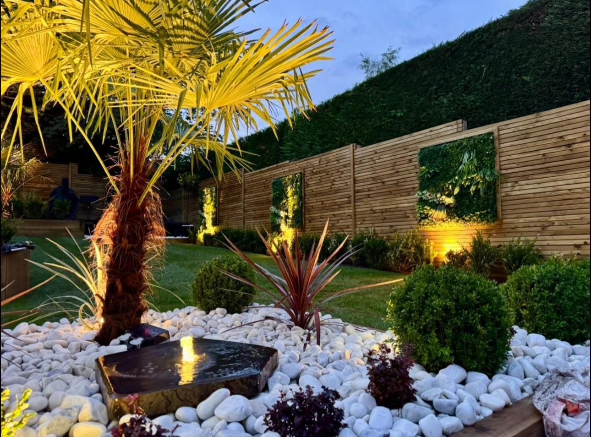
WD LANDSCAPES LTD
Every element.
Part of the bigger picture.
WD Landscapes Ltd provides a professional landscaping service from start to finish in Derby. From paving and lawns to planting and garden boundaries, our project gallery shows how the different elements come together. Talk to us about the garden you have in mind.
01
Paving & structure
Patios, pathways and garden walls that define the space.
02
Lawns & planting
Green areas and planted borders that balance hard surfaces.
03
The complete garden
Fencing, levels and finishing details considered together.
REQUEST A QUOTE
Tell us what
your garden needs.
Complete the form to open WhatsApp with your garden requirements ready to send. This is a quote request, not a confirmed booking.
WD LANDSCAPES LTD
Ready to enjoy your garden?
Derby · Patios · Landscaping · Garden transformations